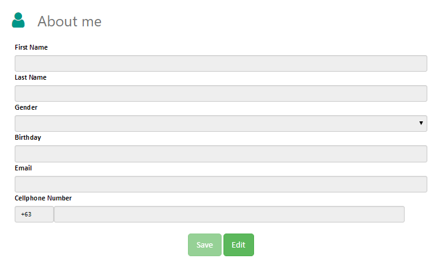

Post Job
-
Basic Information
No one could deny the importance of finding a job for a living. We live through the money we earned at our respective jobs. That is why, filling a job post with valid and trustworthy information will not only help applicants, but also help the company's credibiity in the long run. But enough about that, let's get to the system's basics.
First and firstmost, all of the fields are required and must be filled up accordingly.
Secondly, each user can only input one specific job name. For example, if there is a posted job with the name 'Looking for Expert Programmers.'. The system will not accept any job names with the same name.
-
What does each field do?
- 1. Job Name - As stated earlier, the job name is unique and must not be the same with other job names. The minimum number of characters is ten.
- 2. Job Details - This will be main backbone of the job post. User will most likely read this before anything else, so handle this field with great care. Express everything there is to express about the job. What is the job about? What do you do in this job? etc... Promoting the company is also a bonus. Just remember one thing: make the details clear and concise.
- 3. Min Salary/Max Salary -
- 4. Type of Employment - The choices of this field are as follows.
- Any - Could be intrepreted as any of the choices of below, or other employment types.
- Full Time - A job with a minimum number of hours defined as such by his/her employer.
- Part Time - Form of employment that carries fewer hours per week than a full-time job.
- Freelance - A type of job with no contract required and could be done at home.
- 5. Specialization - Broad set of skills required for the job.
- 6. Requirements - Specific set of knowledge/specific skills/educational attainment required for the job.
- 7. Responsiblities - Set of duties that an applicant must do for the job.
About Me
-
What is this field about?

Account Information pertains to the information that were personal information filled up during sign-up. The information may include basic things such as name, address, phone number and etc... Users can save and edit their information, according to their convience.
Company Profile
-
How to change company logo?
The Company Profle could be divided into two categories. First is the Company Logo and the other is the Company Info. Let's discuss how the Company Logo works.
1. Company Logo
First and foremost, the Company Logo is different from the Profile Image. The Profile Image is the picture of the employer himself, while the CL is the logo of the company. By default, the Company Logo is the official Fresh Start Logo.2. To save the image in the modal, click "Upload Image". Once an image is uploaded, the square on the center of the modal should contain the image uploaded (Refer to item 1 on image 'Company Modal').
You can re-adjust the image by using the slider on the bottom of the image (Refer to item 2 on image 'Company Modal').
Once the changes were made, click "Save Profile Image" to finish your changes. -
How to change company profile?
Company Profile is the most basic information about the company. Information includes: Company Name, Company Overview, Company Specialization, Region, City, Role, Company Address, Company Email, Company Phone Number, Establishment Date.
1. To edit the Company Profile, press the button beside the Company Name.

2. Once the button is pressed, the following textboxes will appear on the screen. (For more information, refer to image 'Textboxes Field').
The following fields are inside the Edit Company Profile page.- 1. Region - Where the company resides in one of the 17 regions in the Philippines.
- 2. City - Specific city in the a certain region in the philippines. It is where the company is found.
- 3. Company Name - Official name of the Company.
- 4. Company Address - Full address of the company.
- 5. Company Email - Official email that the company uses.
- 6. Company Phone Number - Primary telephone number that the company uses.
- 7. Establishment Date - The date when the company was made.
- 8. Company Specialization - Certain field(s) that the company specializes in.
- 9. Company Overview - Brief information about the company.
Once th fields are filled, the user may press "Save" to edit the data, or "Cancel" to return the data to normal.
{kind=link}
{kind=link}
Pending Request
-
What is the pending request tab?
This tab shows the list of requests that an employer has made to an applicant, and the job requests of applicants. User data is listed on table, which could be narrowed down by using the textbox which is above the table.
1. "Applicants Requesting for a Job" - This is a list of applicants requesting a certain job. Employer are allowed to like or dislike a request. When the request is liked, both users are matched and can now proceed to chat.
Applicants requesting for a job
2. "Applicants I've Requested" - This is a list of applicants that the employer wishes to hire. Companies can like Applicants by going to the 'Applicant Finder' page.
Chat Box
-
Information about the chat box
When two users are matched, they can engage in a chat. Chat allows both employers and applicant to talk about negotiations and interview. This two-way conversation allows users to communicate anytime and anywhere, without the use of SMS.
1. Users can open the chatbox, by clicking the 'Chat Room' on the navigation bar. For more information about the navigation bar, click here.
2. Once the chatbox is open, the user can choose a user to engage in chat. Click on a user's name to go to the message board.
Also, applicants can unmatch with a user, by clicking the "Unmatch with User" button.
3. The picture above is the "Message Board". Messages from both users are displayed in the message board. To send a message, the user has to type in a textbox and then press "Send" on the message board or you could press "Enter" on the keyboard. Once the message is sent, it is displayed on message board (Please refer to ChatBox Item 2). The messages on the message board are colored on the positioned according to the sender and the recepient.
The message has two color which are blue and green. A green message means that it is the message of the other party, while the blue message is the message that you have sent.
Please give the chat a try. Of course because it is a chat, the exchange of messages is done in real time; so when you send a message, the other user sees it immediately through notification.
Profile Image
-
How to change employer profile image?

1. Click on the image on the sidebar to change your profile image.

2. If you have followed number 1, a modal should appear on the screen. To open an image click "Upload Image", and once clicked, the square on the center of the modal will change according to the image uploaded.
3. Once an image is uploaded, click "Save Image" to save your image. (Note: If you are unsatisfied with the size of your image, toggle the slider to zoom your image and drag the image to your desired position.)
Navigation Bar
-
Basic Information

This is the navigation bar found on top of the employer profile page. When the user scrolls down or up, the navbar sticks on the screen, making it easier for users to use the system.
- 1. Find Applicant - This link takes the user to the applicant finder page.
- 2. Notifications - The system alerts the user to new messages, match request and request responses.
- 3. Chat Room - Opens the chat roon modal, which contains a list of matched users. For more information about the system, please click here.